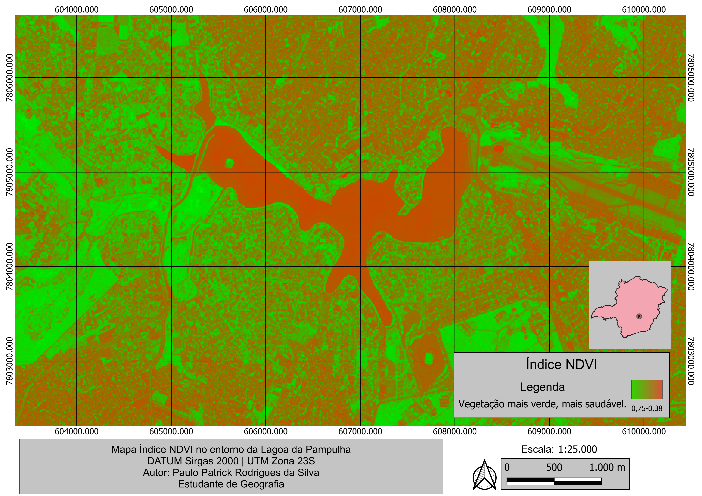
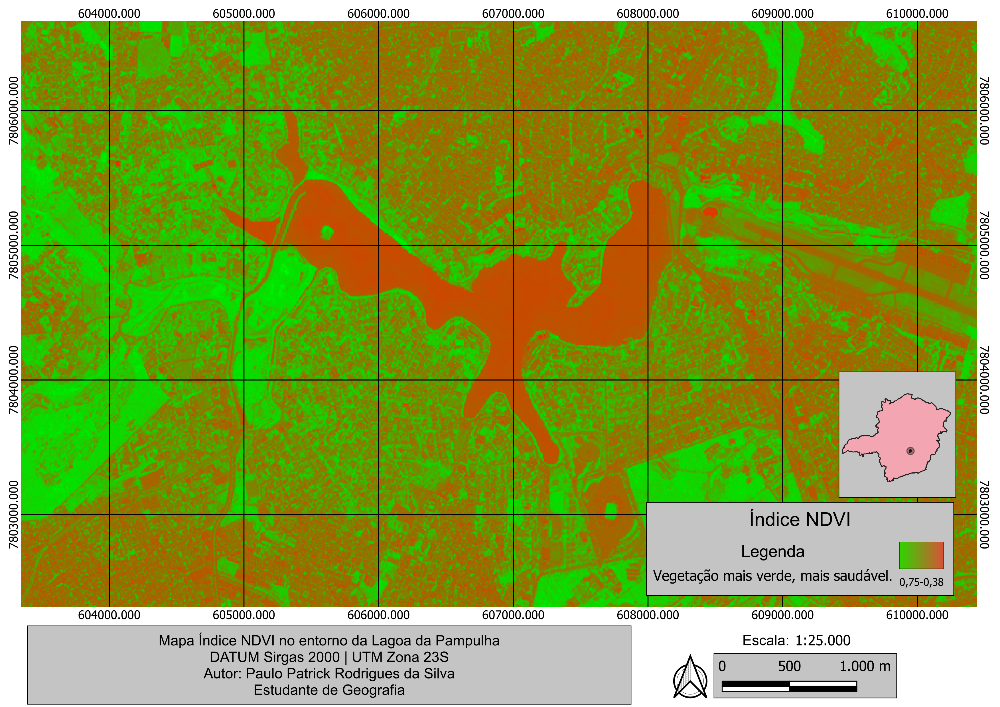
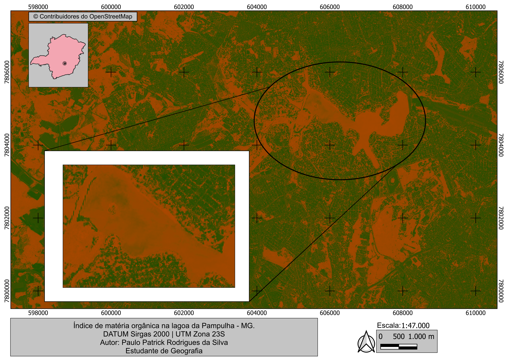
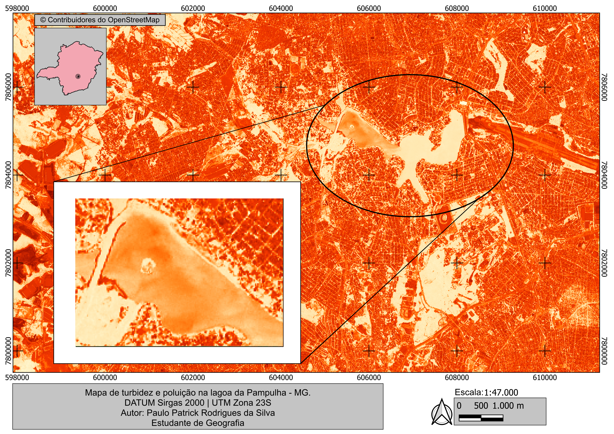
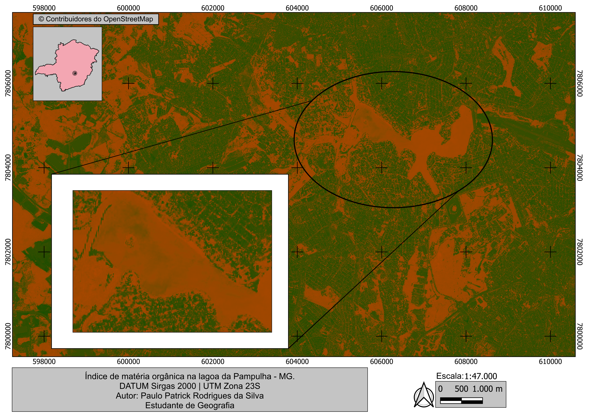
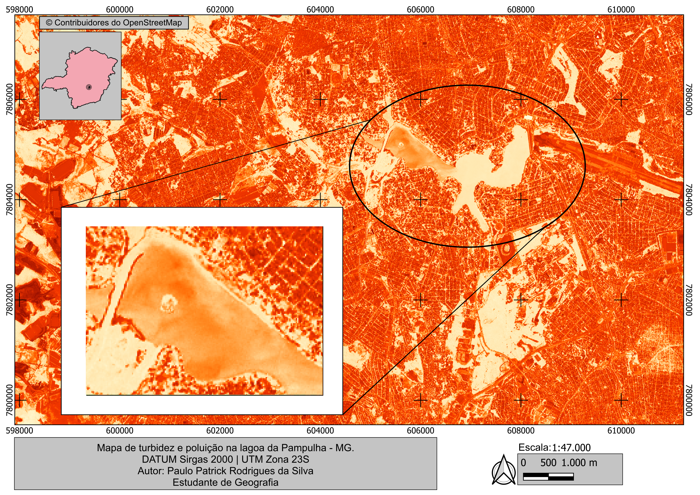
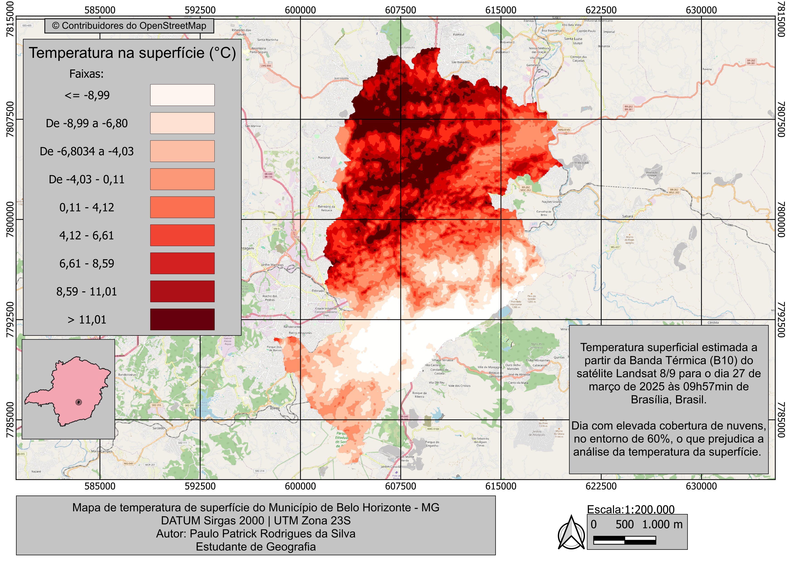
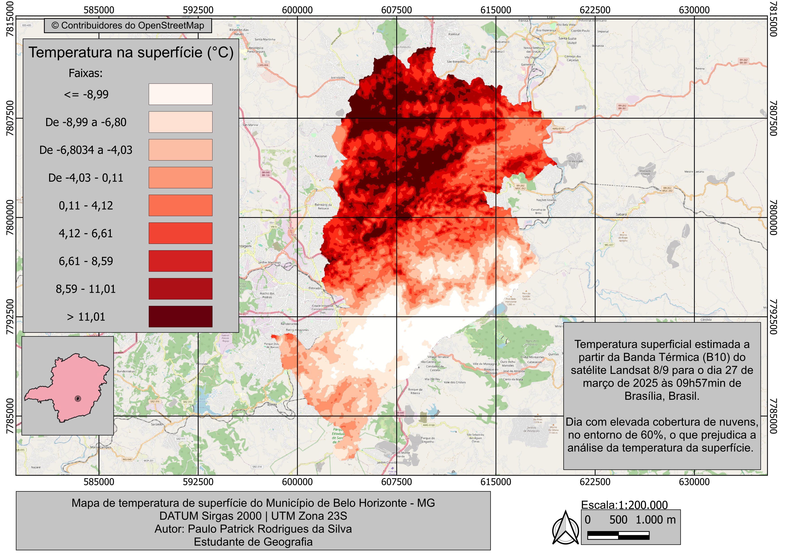

Atlas Cartográfico Ambiental da Lagoa da Pampulha
Autor: Paulo Patrick Rodrigues da Silva
Descrição: Análise ambiental da Lagoa da Pampulha com o uso de sensoriamento remoto e QGIS, explorando índices espectrais (NDWI, NDVI, OMI), mapas térmicos (LST) e aspectos ambientais, urbanos e ecológicos.
Sumário
- Introdução
- Objetivo Geral
- Metodologia
- Correções e Processamento das Imagens
- Cálculo dos Índices Espectrais
- Mapas Térmicos (LST – Land Surface Temperature)
- Composição Cartográfica
- Resultados
- Mapa de Contexto
- Mapa NDWI
- Mapa NDVI
- Mapa de Localização da Lagoa da Pampulha
- Mapa da Bacia Hidrográfica do Ribeirão do Onça
- Mapa OMI
- Mapa de Poluição e Turbidez
- Mapas de Temperatura da Superfície (LST)
- Considerações Finais
Mapas Produzidos

 


 




 
